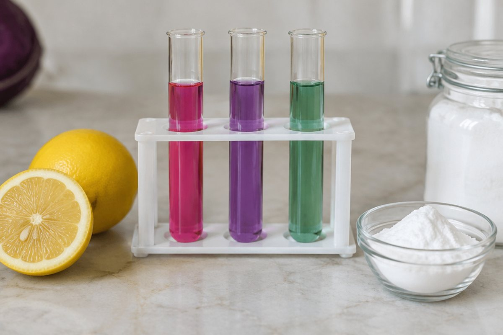

식초와 비눗물은 무엇이 다를까?

레몬즙은 시큼하고, 비눗물은 미끌미끌해요. 우리 주변의 용액은 성질에 따라 어떻게 나눌 수 있을까요?
지시약으로 용액 분류하기
용액의 성질에 따라 색깔이 변하는 물질을 '지시약'이라고 해요. 지시약을 쓰면 겉보기에 비슷한 용액도 산성과 염기성으로 나눌 수 있어요.
리트머스 종이를 쓰면, 산성 용액은 푸른색 리트머스 종이를 붉은색으로, 염기성 용액은 붉은색 리트머스 종이를 푸른색으로 바꿔요.
식초에 푸른색 리트머스 종이를 넣으면 붉게 변해요. 식초는 산성이에요.
여러 가지 지시약
페놀프탈레인 용액은 산성 용액에서는 색깔이 변하지 않고, 염기성 용액에서는 붉은색으로 변해요.
붉은 양배추로 만든 지시약은 산성 용액에서 붉은색 계열, 염기성 용액에서 푸른색이나 노란색 계열로 변해요. BTB 용액은 산성에서 노란색, 염기성에서 파란색으로 변해요.
붉은 양배추 지시약에 레몬즙을 넣으면 붉게, 비눗물을 넣으면 푸르게 변해요.
산성 용액과 염기성 용액의 성질
산성 용액은 대리석이나 달걀 껍데기를 녹이는 성질이 있어요. 넣으면 기포가 생기면서 녹아요.
염기성 용액은 두부나 삶은 달걀흰자 같은 단백질을 녹여 흐물흐물하게 만들어요.
대리석으로 만든 문화재는 산성비에 조금씩 녹아 훼손될 수 있어요.
산성 용액과 염기성 용액을 섞으면
산성 용액에 염기성 용액을 조금씩 넣으면 산성이 점점 약해지다가 염기성으로 바뀌어요. 반대로 염기성 용액에 산성 용액을 넣으면 염기성이 점점 약해져요.
이 성질은 생활에서 많이 쓰여요. 속이 쓰릴 때 먹는 제산제(염기성)는 위산(산성)을 약하게 하고, 생선을 손질한 도마를 식초(산성)로 닦으면 비린내(염기성)가 줄어요.
벌레에게 물려 가려울 때 묽은 암모니아수가 든 염기성 약을 바르는 것도 같은 원리예요. (집에 있는 세제를 직접 바르면 절대 안 돼요!)
핵심 낱말
- 지시약
- 용액의 성질에 따라 색깔이 변하는 물질
- 산성 용액
- 푸른색 리트머스 종이를 붉게 바꾸는 용액
- 염기성 용액
- 붉은색 리트머스 종이를 푸르게 바꾸는 용액
- 리트머스 종이
- 산성·염기성을 알아보는 종이 지시약
- 페놀프탈레인 용액
- 염기성 용액에서만 붉은색으로 변하는 지시약
한 줄 정리
- 지시약을 쓰면 용액을 산성과 염기성으로 분류할 수 있어요.
- 산성은 대리석·달걀 껍데기를, 염기성은 두부·달걀흰자를 녹여요.
- 산성과 염기성 용액을 섞으면 서로의 성질이 약해져요.
학교 교육과정 연결
- [6과09-01] 여러 가지 용액에 지시약을 넣었을 때의 변화를 관찰하여 용액을 산성 용액과 염기성 용액으로 분류할 수 있다.
- [6과09-02] 산성 용액과 염기성 용액의 성질을 관찰하고, 산성 용액과 염기성 용액을 섞을 때 용액의 성질 변화를 실험을 통해 추론할 수 있다.